Zednické práce rychle a kvalitně
Jsem Rudolf Kába – RK STAVBY. Zdění, omítky, sádrokartony, obklady a dlažby, podlahy s podlahovým topením, fasády i kompletní bytová jádra.
- Sídlo ve Vamberku
- Od podlahy po fasádu
- Živnostník, IČO 19507691
Realizace
Fotky z mých zakázek – podlahy, dlažby, sádrokartony, krby i fasády. Kliknutím fotku zvětšíte.
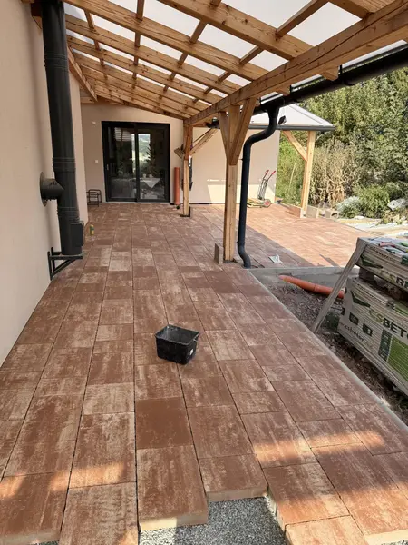
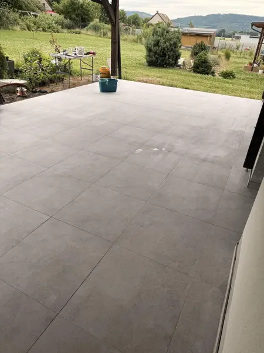
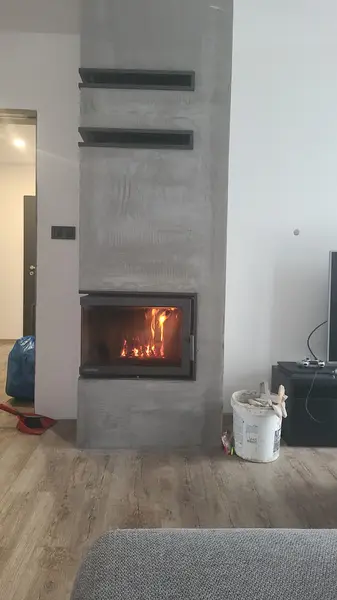
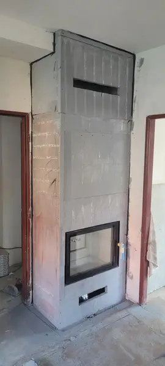
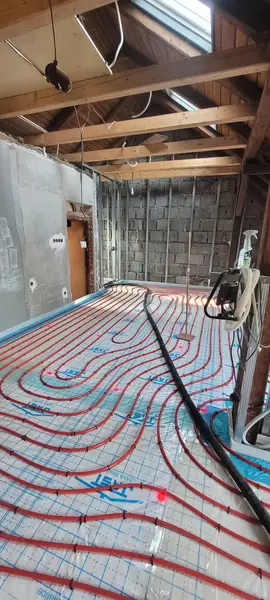
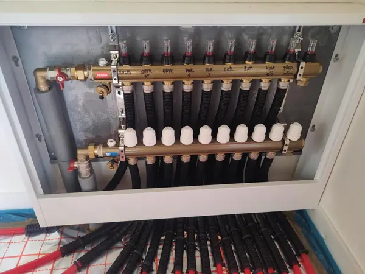
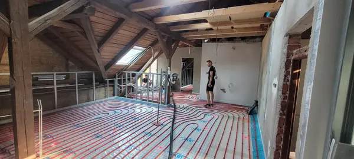
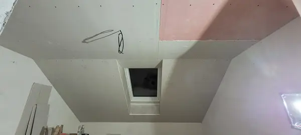
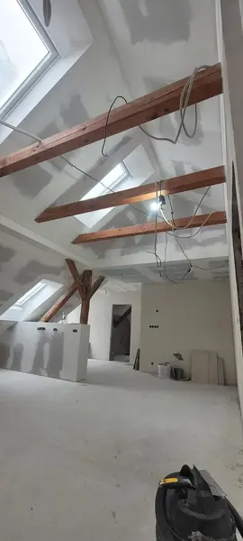
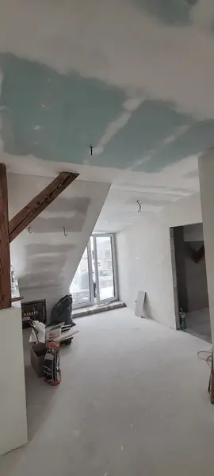
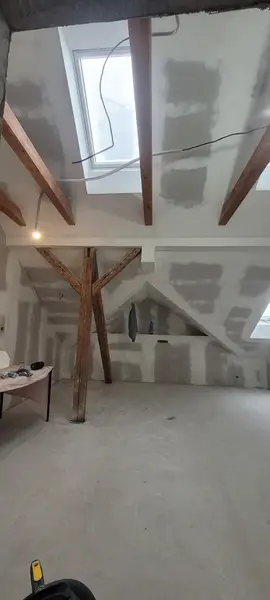
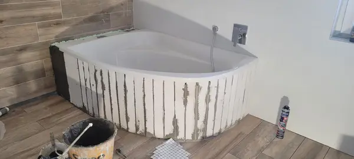
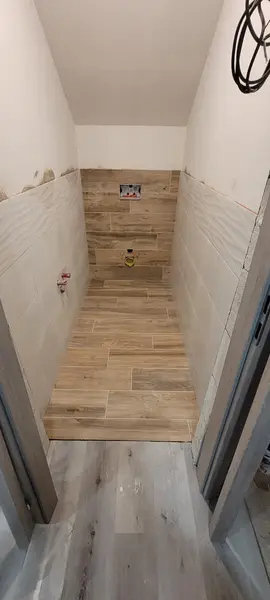
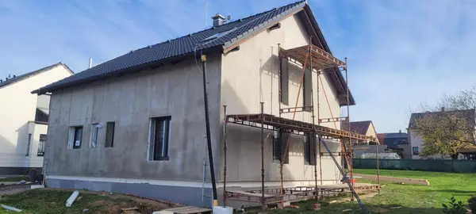
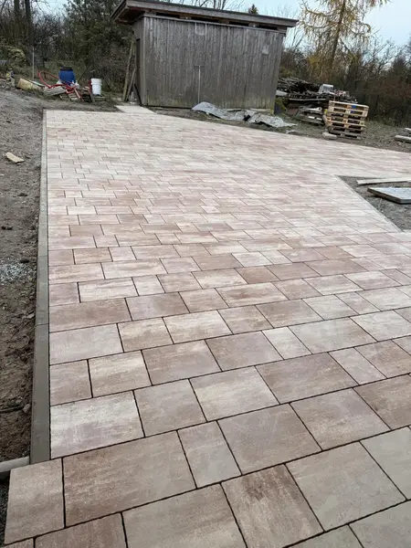
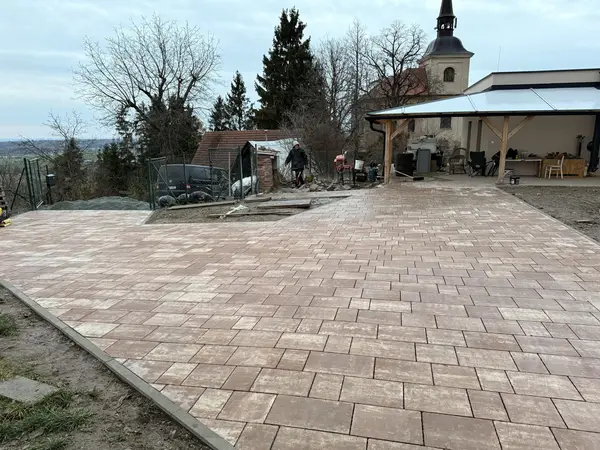
[DOPLNIT: fotky před/po v plném rozlišení a popisy zakázek (místo, rozsah)]
Co pro vás udělám
Zdění a omítky
Zdění příček i zdí, vnitřní omítky, obložky.
Sádrokartony
Podhledy, příčky a podkroví ze sádrokartonu.
Obklady a dlažby
Koupelny, chodby, terasy i venkovní dlažba.
Podlahy
Kompletní skladby podlah: hydroizolace, tepelná izolace, podlahové topení včetně zalití, betonové a anhydritové podlahy.
Fasády a zateplení
Zateplovací systémy a fasády rodinných domů.
Bytová jádra, krby a malování
Kompletní bytová jádra, obestavba krbové vložky, malířské a natěračské práce.
Od telefonu po hotovou práci
- Zavoláte603 914 971
- Prohlídka na místě[DOPLNIT]
- Cenová nabídka[DOPLNIT]
- Realizace[DOPLNIT]
Reference: [DOPLNIT: hodnocení zákazníků se souhlasem]
Otázky a odpovědi
Jaké práce dělá RK STAVBY?
Zednické práce: zdění, omítky, sádrokartony, obklady a dlažby, obložky, zateplení a fasády, kompletní skladby podlah včetně podlahového topení, betonové a anhydritové podlahy, bytová jádra a malířské a natěračské práce.
Kde působíte?
Sídlo je ve Vamberku (Koukolova 967). Práce dělám ve Vamberku a okolí.
Uděláte podlahové topení včetně zalití?
Ano. Dělám kompletní skladby podlah – hydroizolaci, tepelnou izolaci, podlahové topení i zálivku (betonovou nebo anhydritovou).
Obestavíte krbovou vložku?
Ano, obestavba krbové vložky patří mezi moje práce – ukázky najdete v galerii.
Jak získám cenovou nabídku?
Zavolejte na 603 914 971 nebo napište na rudolf.kaba@email.cz. [DOPLNIT: jak probíhá prohlídka a nacenění]
Jak rychle můžete začít?
[DOPLNIT: obvyklá čekací doba]
- Firma
- RK STAVBY – Rudolf Kába, zednické práce
- Adresa
- Koukolova 967, 517 54 Vamberk
- IČO
- 19507691
- Oblast působení
- Vamberk a okolí [DOPLNIT: např. Rychnov n. Kn., Kostelec n. Orl., Žamberk – ověřit]
- Kdy volat
- [DOPLNIT: Po–Pá dle domluvy?]